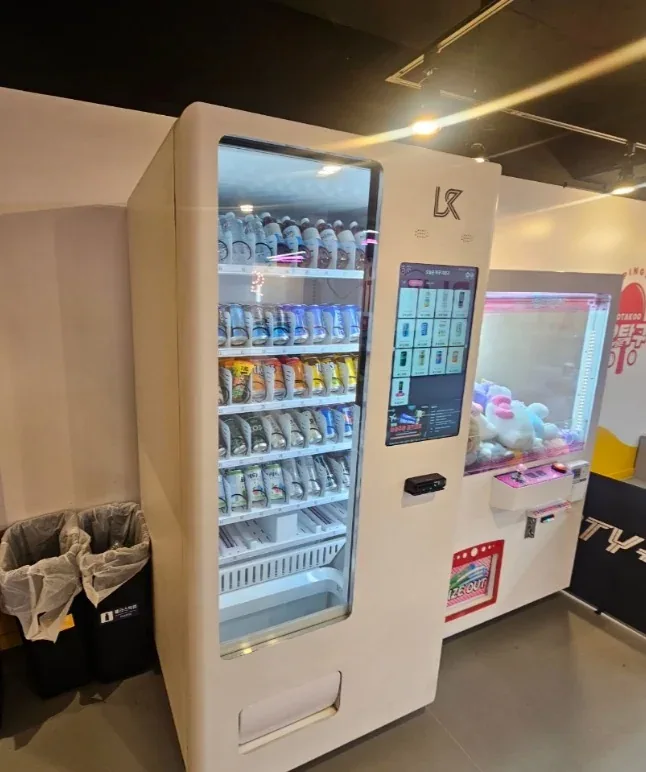
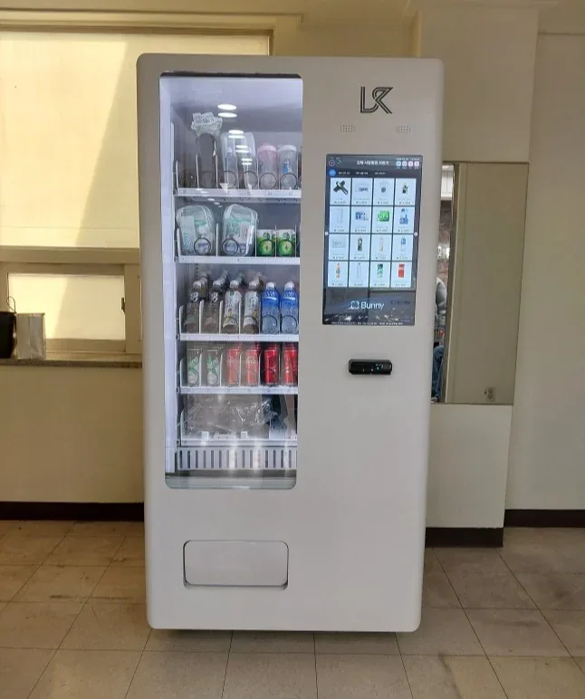

스포츠시설
운동 전후 이용자 수요에 맞춘 상품 구성과 설치 위치 검토
학교 자판기부터 호텔·병원·스포츠시설 자판기까지, 공간의 이용자와 판매 상품에 맞는 구성 방법을 사진과 함께 살펴보세요.
학교의 쉬는 시간과 호텔의 심야 시간대는 자판기가 사용되는 방식이 다릅니다. 같은 모델이라도 이용자의 연령과 방문 시간, 판매 상품, 보충 담당자의 접근성에 따라 실제 운영 방식이 달라집니다.
설치사례 사진은 해당 공간에서 기기가 어떻게 배치되는지 이해하는 데 도움이 됩니다. 다만 사진에 있는 기기 구성과 판매량이 다른 장소에서도 그대로 적용되는 것은 아니므로 도입 전 실제 설치 조건을 확인하는 것이 중요합니다.
아래 사진은 MTS해원이 제공한 설치 사례 자료에서 가져온 실제 현장 사진입니다. 장소마다 제품 구성과 설치 조건은 달라질 수 있습니다.

운동 전후 이용자 수요에 맞춘 상품 구성과 설치 위치 검토

환자와 방문객의 이용 동선을 고려한 설치 조건 검토
설치 주소, 예상 상품군, 전기·통신 준비 상태, 예상 구매 수량을 확인해 상담을 신청할 수 있습니다. 기기 규격과 반입 동선은 선택한 모델에 맞춰 검토합니다.